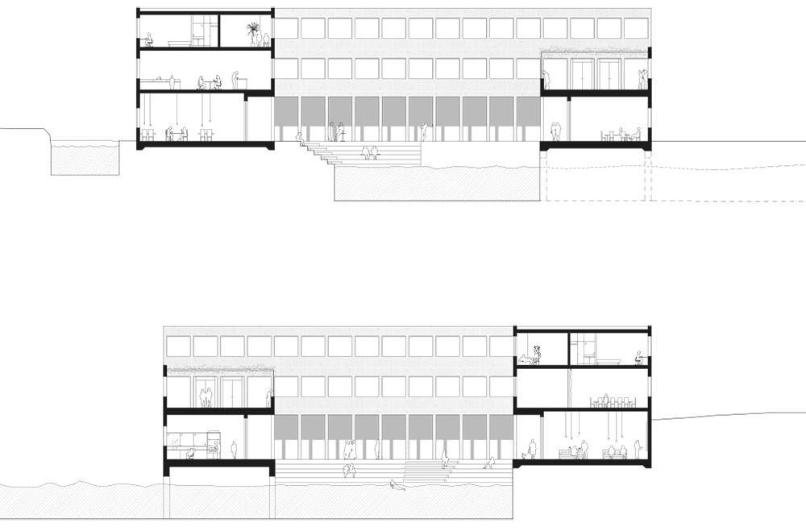
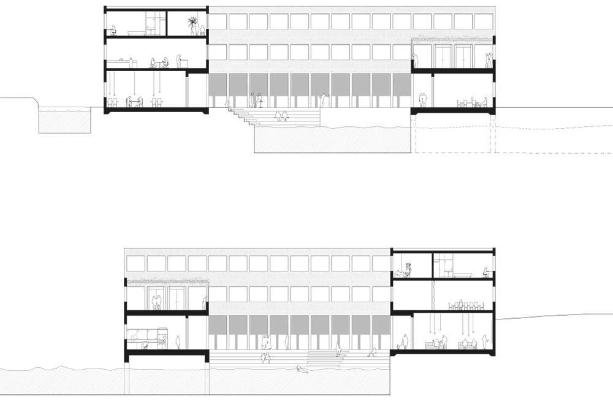

The Fortress of Solitude
A marine research center in Ombla
Type
Educational, Research
Location
Dubrovnik, Croatia
Year
2013
Supervisors
Leif Brodersen Teres Selberg
A Marine Research Center is placed in Ombla, at the end of the ria Rijeka Dubrovacka and the foot of the Golubov Kamen Massif. The concept of the building draws inspiration from the field of research, from the notion of extracting an object from its original context to analyse it, however always in close relation to the past and the present. Also, inspiration was drawn from the organizational structure of the monastery, where varied functions are gathered under one roof, all focused on and devoted to the same goal.
This is translated into an introverted building, seemingly closed off from the outside world, which opens up on the inside and focuses around a central courtyard. This courtyard consists of an elliptical water basin. In an otherwise rectilinear structure the basin stands out as the buildings main element and focal point. A concrete structure is covered by pieces of limestone, a local material in Dubrovnik. On the outside, the stone is left untouched, its rugged edges creating the impression of an eroded rock when looking at the building from afar. Toward the courtyard, the facade stone is cut and polished, enhancing the feeling of a carved-out void.
With its introverted but at the same time open character, the Ombla Marine Research Center becomes a place of solace, inspiration and admiration, in a harmonious and serene setting. The focus is on the research taking place and the nature it is aiming at understanding. For the researchers, it becomes their fortress of solitude.
 
